The goal of this lab session is to use persistent homology to derive stable signatures for 3D shape classification.
We aim at classifying the shapes of the FAUST dataset. They are high quality triangulations of human scans in different positions. The goal of this session is to cluster these human meshes, each cluster representing a specific position.
| 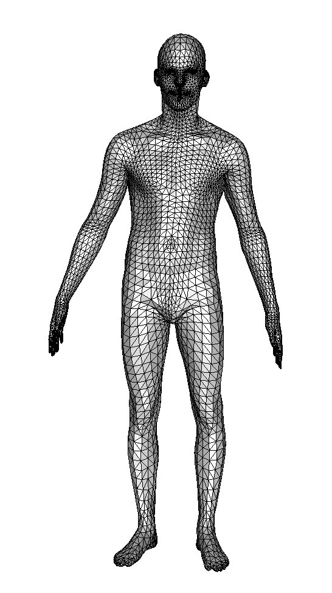 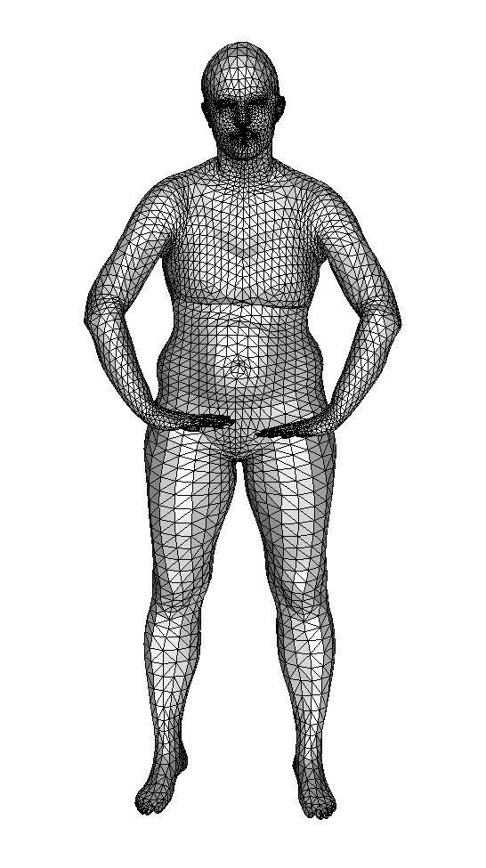 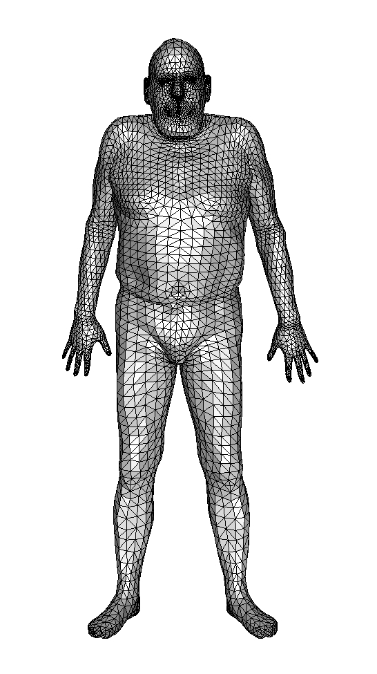 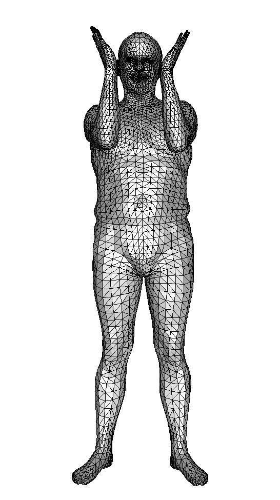 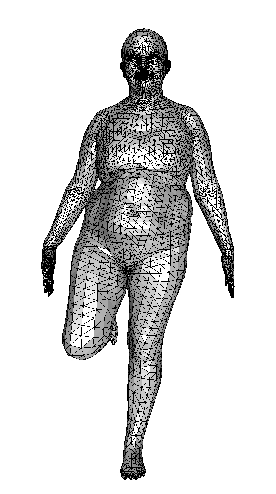 |
| 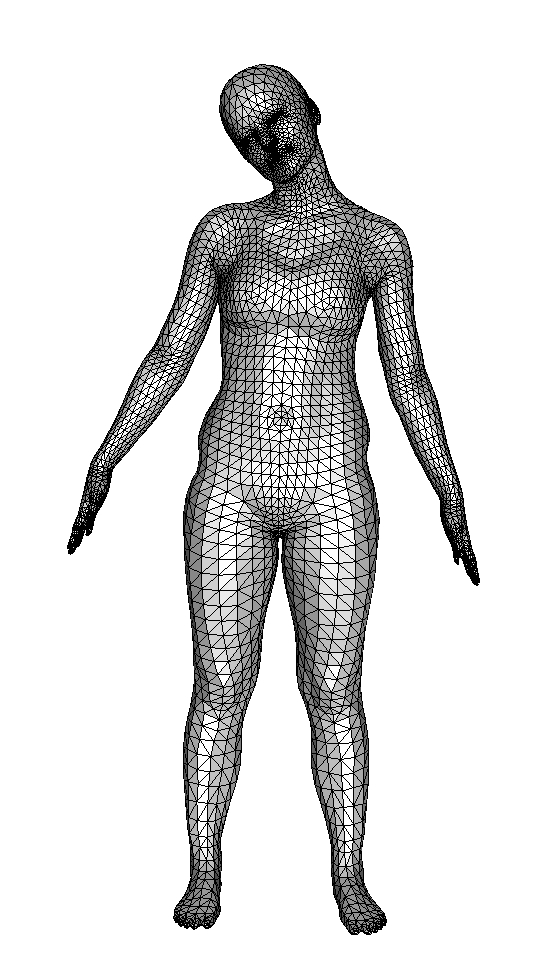 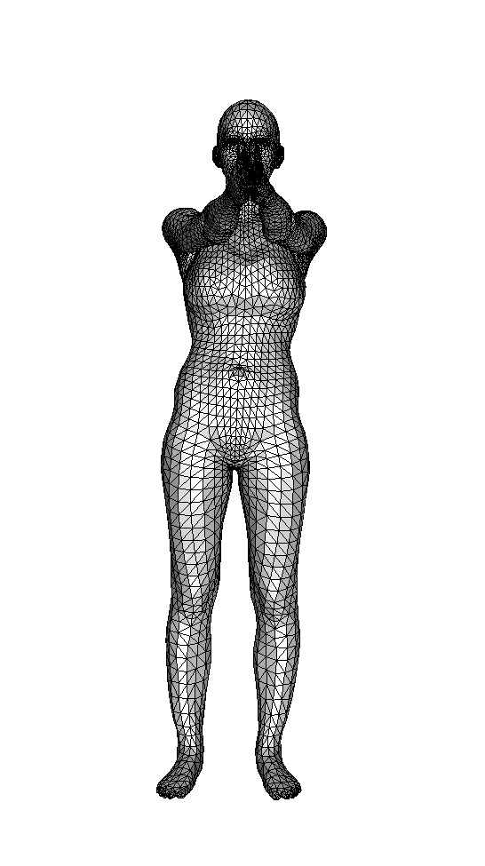 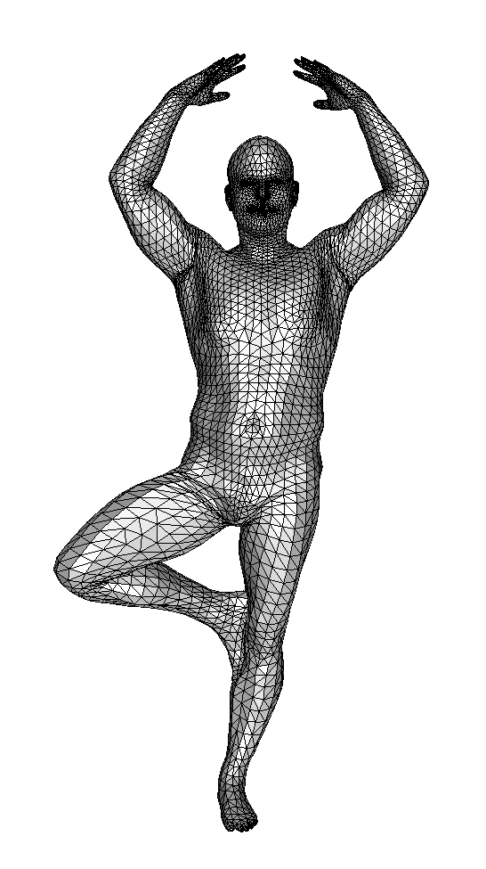 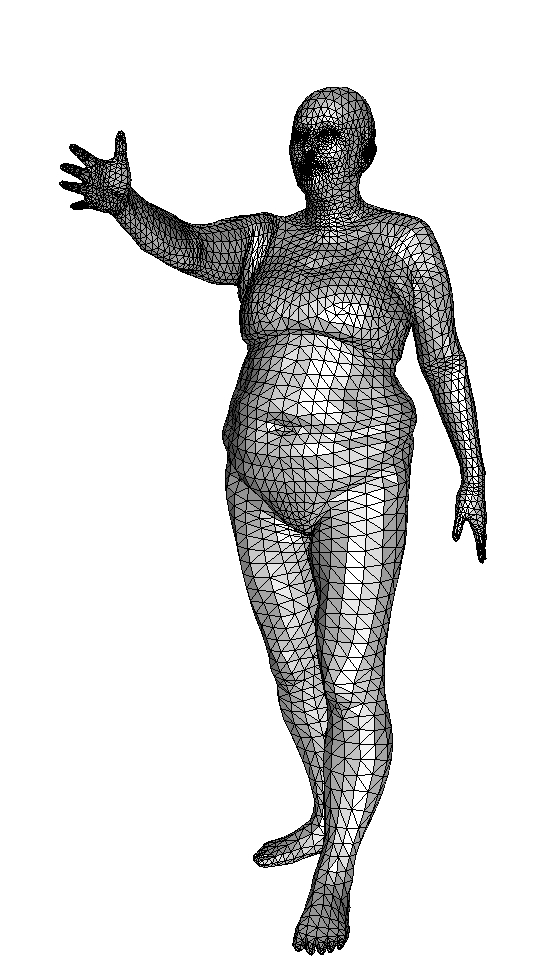 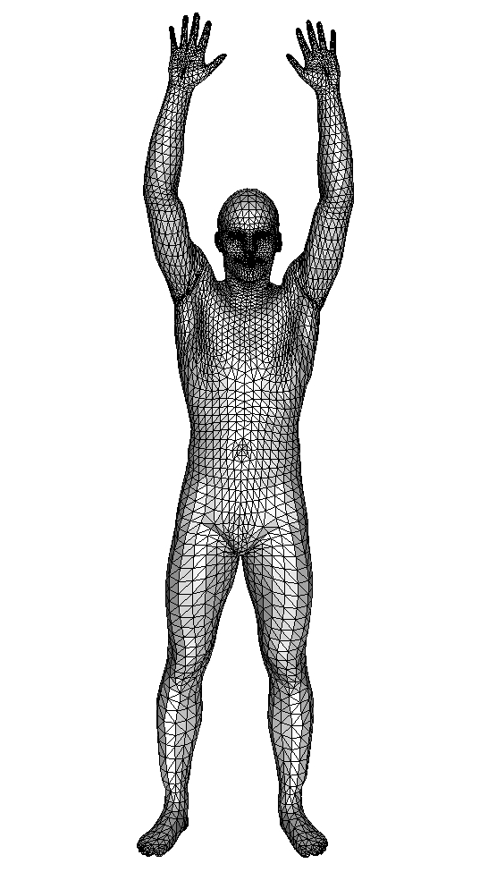 |
Here are the triangulations. They are given in the .off format. Each file is of the form:
OFF
nv nf 0
x_0 z_0 y_0
...
x_{nv-1} z_{nv-1} y_{nv-1}
3 i_0 j_0 k_0
...
3 i_{nf-1} j_{nf-1} k_{nf-1}
where:
Q1. Compute the lower-star filtration of h_S for every shape S -- that is, the filtration for which every simplex is assigned the maximum of its vertices values. Recall that the height of a vertex is given by its second coordinate (and not the third one) in the .off files. Here is our solution code in C++ and the corresponding filtrations.
Q2. Use the code you implemented during TD5 to compute the barcodes of these filtrations. Here is our C++ code in case you do not have access to yours, and here are the resulting barcodes.
Q3. Implement the following mapping procedure, sending each barcode to a vector (called feature vector) in Euclidean space. The procedure takes in a barcode and two parameters:
Here is our solution code in C++.
Q4. Apply your code to the barcodes obtained from the collection of 3D shapes. Use parameters d=2 and n=10 for this. You should obtain one feature vector of dimension 3*10*11/2=165 per shape. Here are the vectors bound into a single 100x165 matrix stored in an ASCII file.
Now that we have feature vectors, we want to perform dimensionality reduction on them for visualization and effective classification.
Q5. Use the code you implemented during TD1 to reduce the dimension to 2 and 3 with PCA. Here is our solution code in R.
Q6. Visualize the data. You should obtain something like this.
| 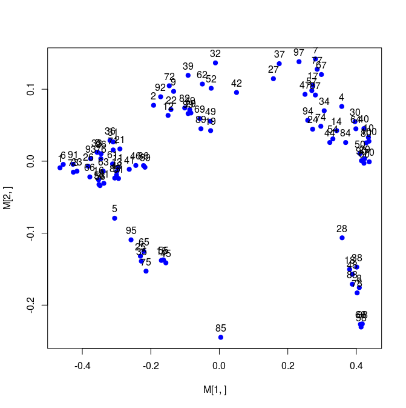 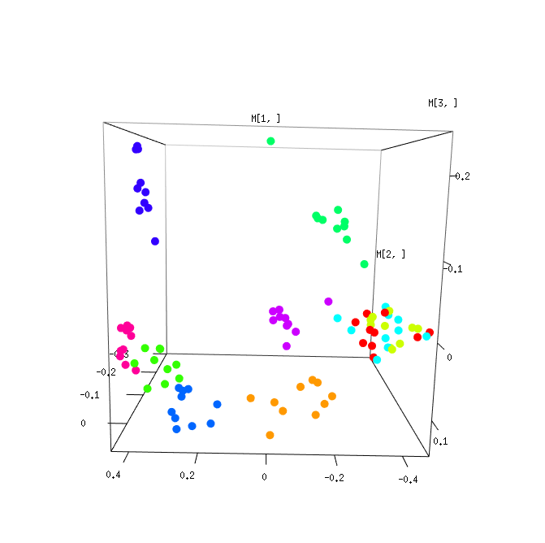 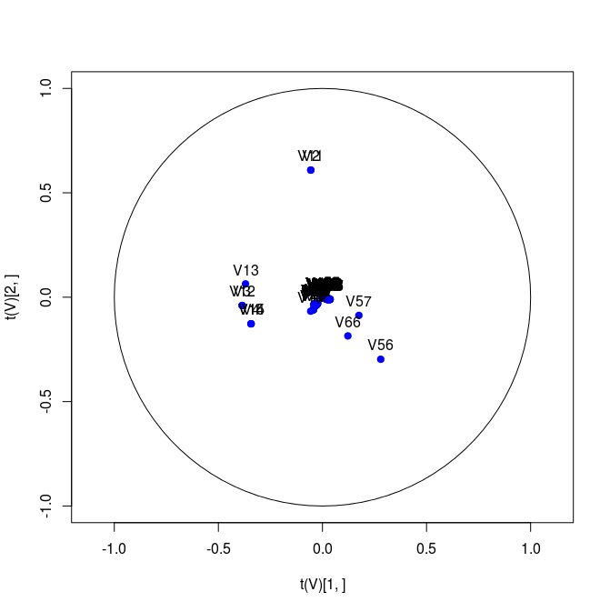 |
Explain why some clusters seem to be mixed together. Can you guess which coordinates in the feature vectors are relevant?
Now we want to see what happens with other filtrations. We provide filtrations obtained by computing unions of balls with increasing radii.
Q7. Apply the same pipeline to get Euclidean vectors. Here are the vectors stored in a single ASCII file.
Q8. Visualize again the dataset in 2D and 3D. You should obtain something like this.
| 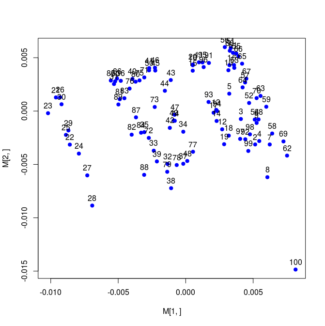 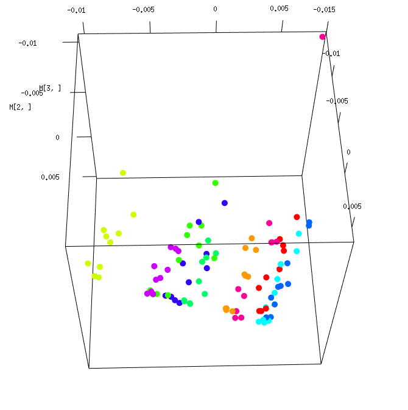 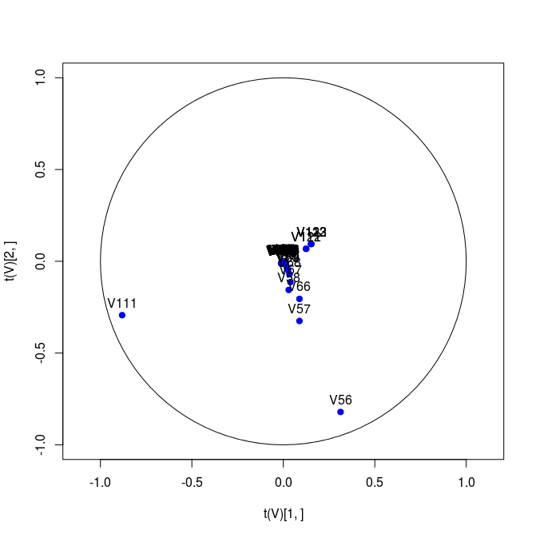 |
What are the relevant coordinates in the feature vectors this time? Can you infer what the three clusters correspond to?
Try various clustering algorithms (k-means, single-linkage, ToMATo, etc.) on the datasets in 2D or 3D. Which one works best for each dataset? What is the corresponding error rate (relative number of misclassified shapes)? Can you explain the results?
{kind=link}
{kind=link}
{kind=link}
{kind=link}
{kind=link}
{kind=link}